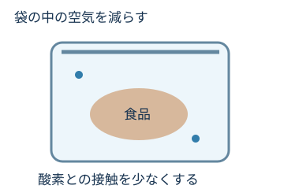
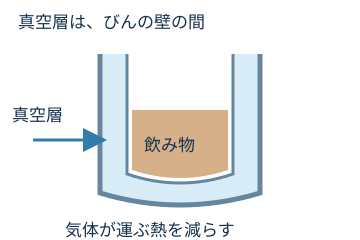
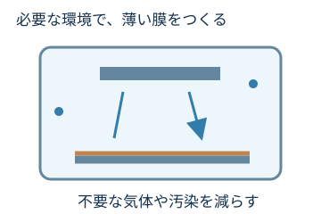
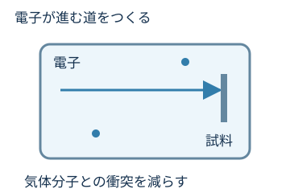

食品の真空包装

袋の中の空気を減らし、酸化などの品質変化を抑えるのに役立てます。
真空包装は殺菌ではありません。表示された保存温度・期限を守る必要があります。
何に使うかだけでなく、「なぜそこで真空が必要なのか」を考えてみましょう。

真空って、白衣を着るような場所だけで使うと思ってた。

家の保温ボトルにも「真空断熱」って書いてあったよ。

身近な製品にも使われています。「何を減らしたいか」に注目して見てみましょう。
気体を減らすと、気体が運ぶ熱や、不要な接触・衝突を減らせる。

袋の中の空気を減らし、酸化などの品質変化を抑えるのに役立てます。
真空包装は殺菌ではありません。表示された保存温度・期限を守る必要があります。

二重の壁の間を真空にし、気体の熱伝導や対流を減らします。飲み物そのものを真空にするわけではありません。
熱の移動がゼロになるわけではなく、ふた・接合部や放射からも熱は伝わります。

スマートフォンの半導体や、ガラス表面の薄い膜をつくる工程でも真空を使います。不要な気体や水分を減らし、狙った膜をつくりやすい環境にします。

スマホの中が真空なんじゃなくて、つくる途中で使うんだ！
はい。工程に応じて、圧力や必要な気体を調整しています。
スパッタリングも薄膜をつくる方法の一つです。いったん不要な気体を排気した後、アルゴンなどの必要な気体を入れ、圧力を調整して成膜します。
「気体をすべてなくす」より、「必要な環境をつくる」。

電子顕微鏡では、光の代わりに電子を使って小さなものを調べます。気体が多いと電子がぶつかって進み方が変わるため、電子の通り道を真空にします。
装置の方式や場所によって必要な圧力は異なります。試料室を低真空で使う方式もあります。
何に使うかで、必要な真空の状態も変わるんだね。
酸素との接触や、気体が運ぶ熱を減らす。
不要な気体を減らし、膜をつくる環境を整える。
電子が気体分子に邪魔されにくくする。
次は01〜06の振り返りです。理由を自分の言葉で考えられれば十分です。
図は仕組みを理解するための概念図です。形状・粒子数・圧力範囲は実機を再現していません。